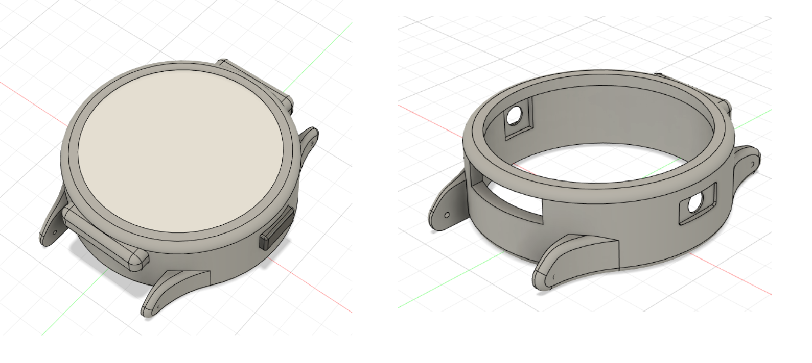
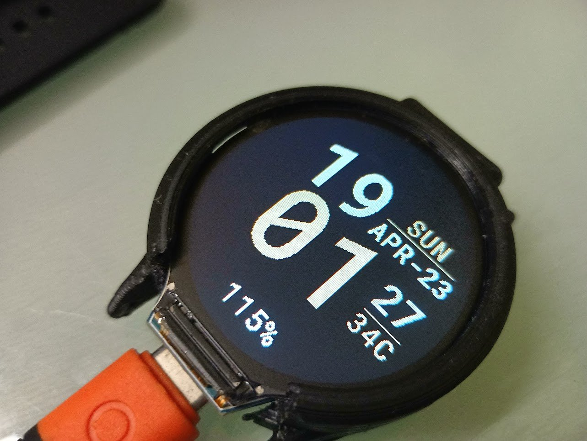
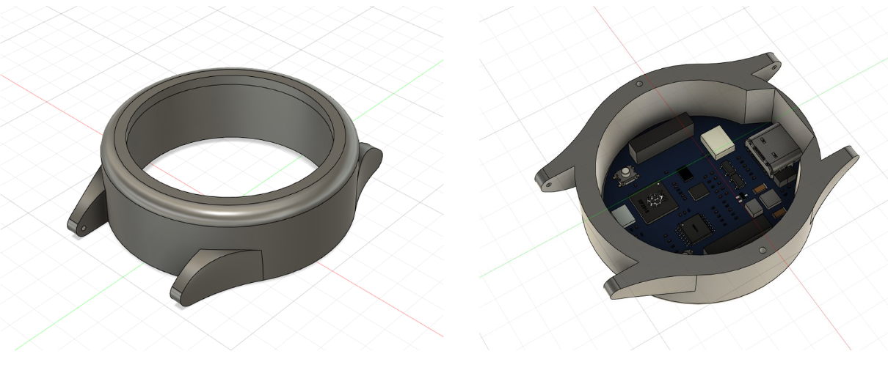
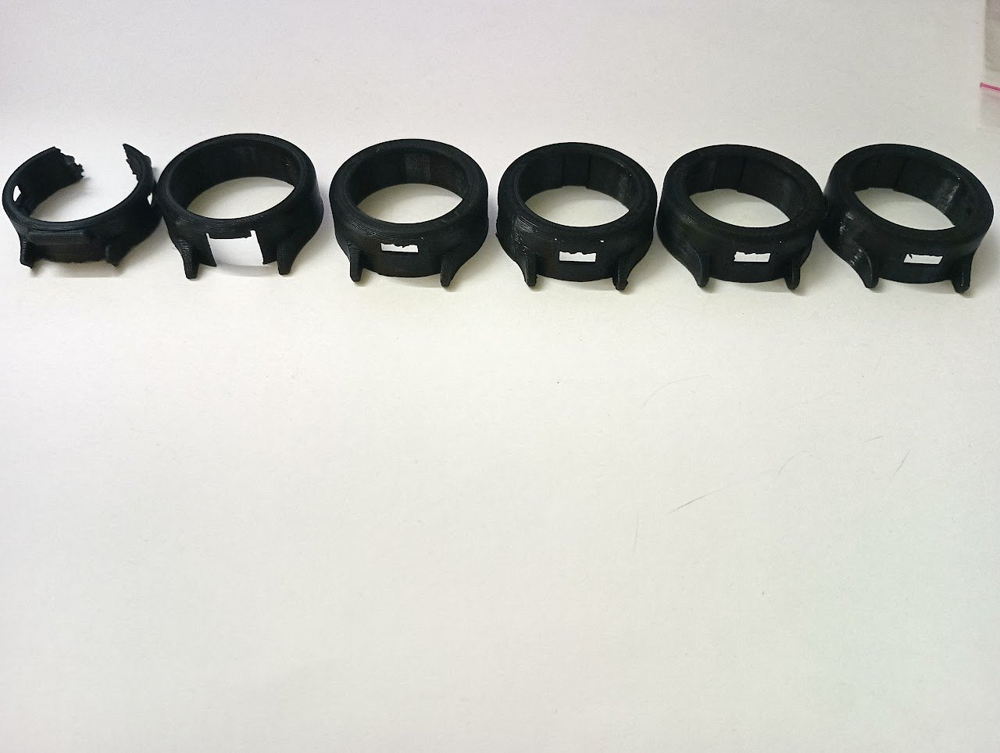

April 2023 - May 2023
Dev Log 14
Project Update - April 2023
This month I made a lot of progress on the software for the watch. After some deliberation I decided to write the software in C with the RP2040 C SDK rather than just using Arduino. I wanted to learn something new from this project and dip my toes into "real" embedded system software.
First I began working on the watch faces, then moved onto the actual time ticking software and other miscellaneous stuff. My first go at the watch face was dead simple; time (hour, minute, second) in big text in the middle of the screen, and the date right below it (fig 1).


Once I had a basic understanding of how all the display drivers worked I had a go at making a proper watch face. I wanted this to be clean and simple. Time in the center, date at the top and temperature and battery percentage at the bottom. All separated by nice little lines.
Next up was a more aesthetic watch face. Here I played around with using "less plain" colors and changed up the formatting of the time and date shown. Some of Garmin's watch faces inspired me for this.
I also designed a basic case for the watch (fig 4). I wanted it to be very small and low profile so what I did is make a case just big enough for the circular part of the display module to fit in and have a cutout for the USB-C extrusion to prod out of. This extrusion will be covered by a cap and there is an identical cap at the back for symmetry. Also there are two buttons on either side of the watch.

Project Update - May 2023
A continuation of last month's case design efforts. I got the 1st version of the case printed (fig 5), however it didn't turn out so great. The case was very flimsy due to how thin the walls were and the USB-C cap idea failed spectacularly. In fact I had to break off the front of the case just to slide the RP2040 module in the case.

So I redesigned the case from scratch (fig 6). No more extremely thin walls and weird protrusions, the whole module is now going to fit nicely inside the case. I bumped up the case diameter a whole 7mm and cutout a contour-ish shape for the USB protrusion to fit in. This version didn't have any buttons.

After printing and testing the 2nd version of the case I realized there were still some kinks I needed to iron out, so I did that and more with the 3rd version of the case. Then I had to fix the positioning and size of the USB-C port hole, then added some buttons which I did with the 4th version. Finally the 5th version changed the position of the buttons so they rest better inside the case. Iterative design (fig 7)!

With all the hardware stuff done I had to turn my eyes to software and add the buttons functions and tidy it up a bit so I could publish it on Git. But before I do that I had the all important task of naming the thing. And I chose the name, WatchPi, an amalgamation of Watch and Raspberry Pi. Here is the GitHub repo with all the code and CAD for WatchPi - https://github.com/abhignay/WatchPi